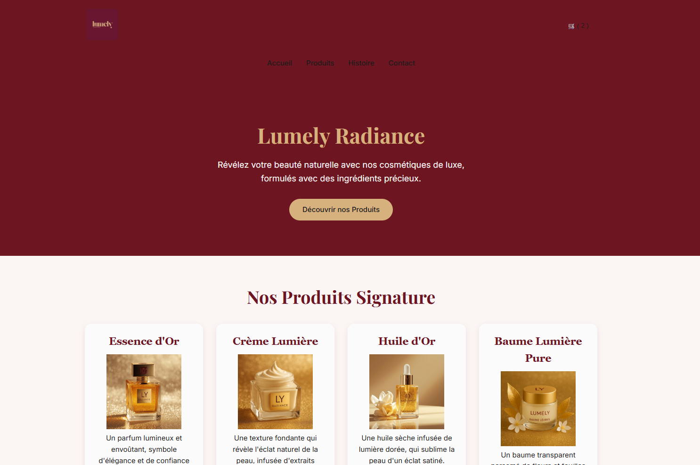
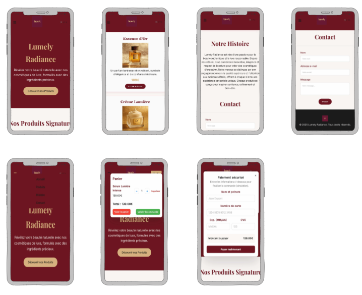

Lumely Radiance
Projet individuel réalisé dans le cadre du module Responsive Web Design & Développement mobile — Octobre 2025.
Objectif du projet
Créer un site web responsive et élégant pour une marque fictive de cosmétiques de luxe. L'objectif était de mettre en pratique les notions de RWD (Responsive Web Design) et d'approche Mobile First.
Technologies utilisées
- HTML5 / CSS3
- Flexbox & Media Queries
- Responsive Design (Mobile First)
Mon rôle
J'ai conçu l'ensemble du site : structure HTML, mise en page, choix des couleurs et typographies, maquette sur Balsamiq et déploiement sur Netlify.
Détails du projet
- Durée : 3 semaines
- Période : Octobre 2025
- Travail : Individuel
- Module : Atelier RWD (ZAHAF Ali)
Liens utiles
Aperçu du projet

